Startseite mit Login. Hier können Kunden ihre Fahrzeuge
und Reservierungen verwalten.
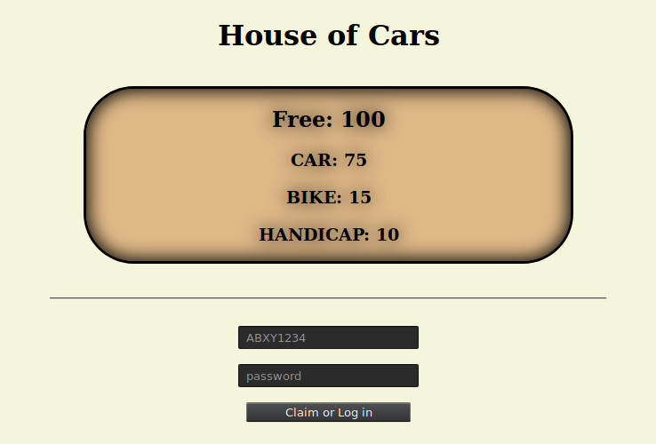
Login
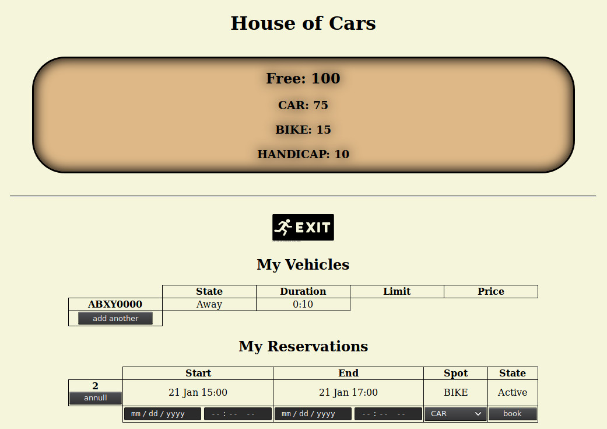
Überblick: Ein Fahrzeug abwesend, eine Reservierung
Die folgende Figur zeigt ein Fahrzeug für
jeden möglichen Zustand. Aus der Tabelle lassen sich folgende Aussagen
ablesen:
ABXY0000 ist seit 4 Minuten und 23 Sekunden nicht mehr im Parkhaus.
ABXY0001 ist seit 12 Sekunden im Parkhaus und sucht nach einem Platz.
ABXY0002 parkt seit 12 Sekunden. Der Kunde muss den Parkplatz spätestens
am 22. Januar 17:58 Uhr räumen.
ABXY0003 hat den Parkplatz vor einer Sekunde frei gemacht und ist nun
auf dem Weg, das Parkhaus zu verlassen. Die Ausfahrt ist nur gestattet, wenn der angezeigte
Preis von 0.08 € bezahlt wurde. Kunden mit registrierter Zahlungsmöglichkeit können trotzdem
einfach hinausfahren - es wird automatisch abgebucht.
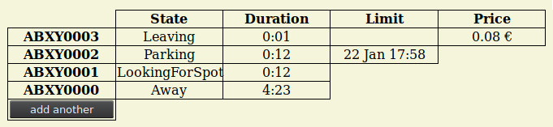
Fahrzeugzustände
Durch Druck auf kann der Kunde ein weiteres
Fahrzeug auf sich registrieren:
Der Kunde gibt das Nummernschild seines Zweitfahrzeugs an.
Falls das Fahrzeug bereits auf jemand anderen registriert ist, muss der Kunde
das Passwort desjenigen kennen, damit er den Fahrzeughalter ändern kann.
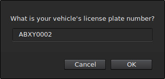
Schritt 1
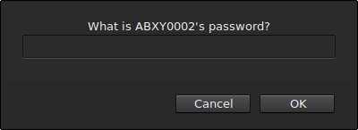
Schritt 2
Um eine Reservierung vorzunehmen sind lediglich folgende Angaben erforderlich:
Start- und Enddatum
gewünschter Parkplatztyp
In diesem Zeitraum wird ein Platz des gewählten Typs zurückgehalten werden, indem der Zähler einen Platz subtrahiert.
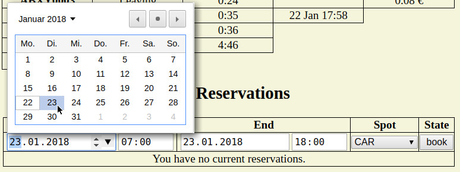
Anlegen einer Reservierung
Virtuelle Schranke
http://<host>:<port>/vgate
Eine Schranke aus der Sicht der Fahrer. Hier kann das Parkhaus
betreten oder verlassen werden.
Parker brauchen kein Ticket zu ziehen. Es genügt, an die Schranke heranzufahren,
und ein Nummernschildleser öffnet die Schranke automatisch (falls das Fahrzeug
berechtigt ist, das Parkhaus zu betreten bzw. zu verlassen).
Ein Nummernschildleser kann man in dieser Situation durch einfache Kameras realisieren,
weshalb die Kosten nicht mit denen von polizeilich eingesetzen Nummernschildlesern
zu vergleichen sind. In der Simulation müssen Nummernschilder manuell eingeben
werden.
Einfahrt
Ein Fahrzeug fährt an die Schranke heran.
Sobald der Nummernschildleser das Fahrzeug erfasst hat überprüft die
Schranke, ob das Fahrzeug Zutritt zum Parkhaus bekommen soll. Dazu wird anhand
von aktuellen Parkern und Reservierungen festgestellt, ob noch ein Platz frei ist.
Nach wenigen Sekunden öffnet sich die Schranke und zeigt die Nummer eines
empfohlenen freien Parkplatzes an. Der Fahrer kann nun der Beschilderung
folgen, ist aber auch frei, einen anderen Platz zu wählen.
Die Schranke schließt hinter dem Fahrzeug wieder. Der Button ist deaktiviert,
um zu signalisieren, dass das eingetragene Fahrzeug bereits im Parkhaus ist. Ein
zweites Fahrzeug mit identischem Nummernschild sollte es nicht geben - falls doch,
wird es nicht hereingelassen.
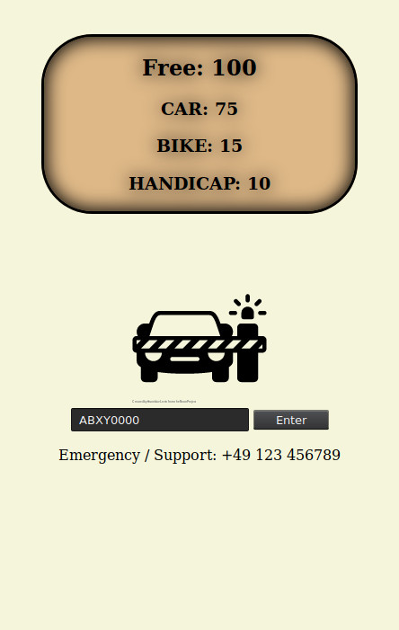
Schritt 1
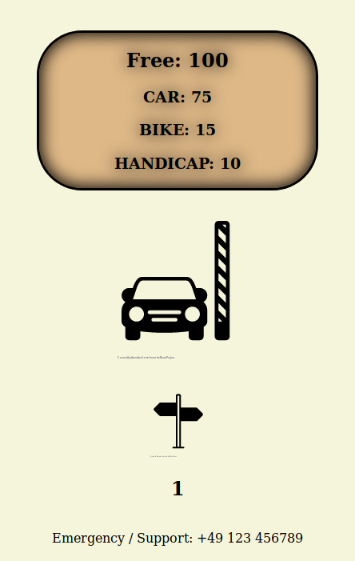
Schritt 2
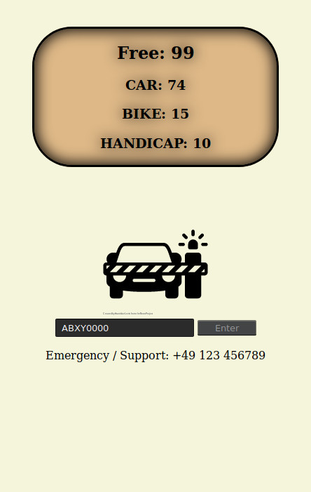
Schritt 3
Ausfahrt
Das Fahrzeug verlässt seinen Platz, was von dem dortigen Nummernschildleser
gemeldet wird. Ab diesem Moment berechnen wir keine Gebühren mehr. Solange
der anfallende Preis aber noch nicht bezahlt ist, darf das Fahrzeug das Parkhaus
nicht verlassen - der Button ist deaktiviert.
Sobald der Kunde bezahlt hat wird der Button aktiviert - das Fahrzeug darf nun
das Parkhaus verlassen. Ist das Fahrzeug mit einer Zahlungsmethode registriert,
wird der Preis automatisch abgerechnet. Dazu ist leider noch kein Equivalent
implementiert.
Beim Heranfahren an die Schranke wird diese geöffnet und der Kunde kann
direkt hinausfahren.
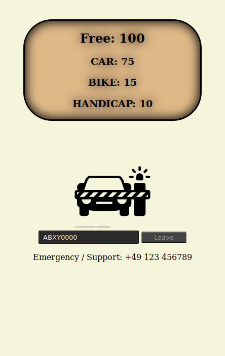
Schritt 1
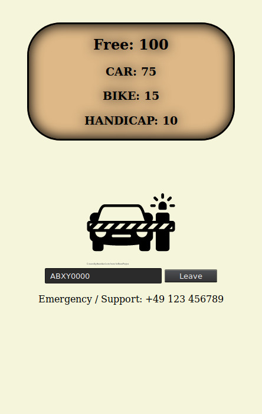
Schritt 2
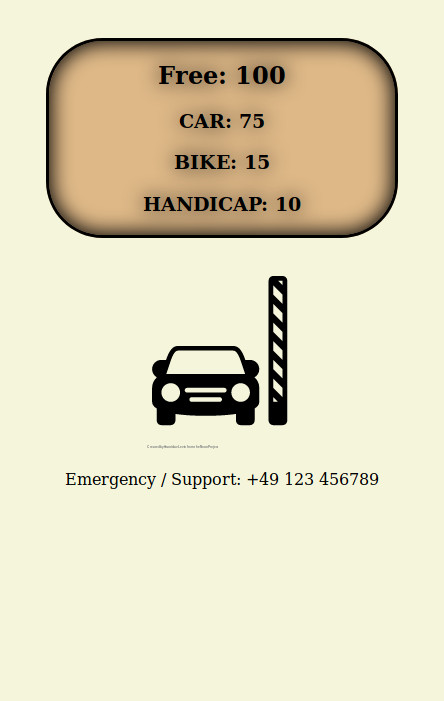
Schritt 3
Administration und Statistiken
http://<host>:<port>/dashboard
In der Praxis sollte dieser Bereich gesondert zugriffsgeschützt werden,
etwa durch den Einsatz eines Reverse Proxy wie NGINX mit HTTP Basic Authentication.